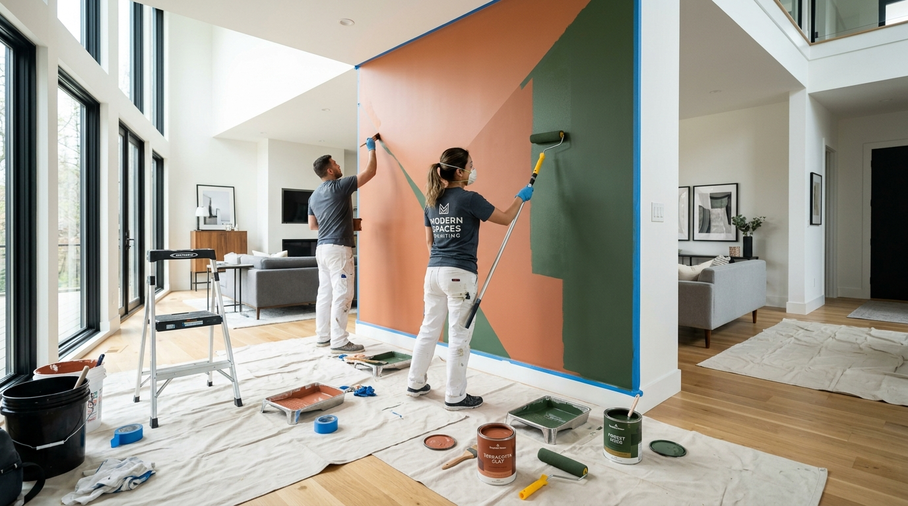

💧 Tembok Lembap
5 Solusi Ampuh Mengatasi Tembok Lembap & Cat Mengelupas

Tembok rumah yang lembap, bercak jamur hitam, dan cat yang melepuh/mengelupas merupakan masalah umum yang sering dialami pemilik hunian di wilayah Yogyakarta, terutama saat memasuki musim penghujan.
Jika dibiarkan tanpa penanganan tepat, kelembapan tidak hanya merusak estetika bangunan, tetapi juga dapat menurunkan kekuatan struktur tembok serta memicu timbulnya bakteri yang mengganggu kesehatan pernapasan penghuni rumah.
Berikut adalah 5 langkah penanganan ampuh dari tim profesional Vistara Build untuk menuntaskan masalah tembok lembap:
1. Identifikasi Sumber Air dan Rembesan
Langkah pertama yang paling krusial adalah menemukan sumber kelembapan. Kelembapan bisa berasal dari kebocoran saluran pipa dalam dinding, rembesan air dari dak beton, atau kapilaritas air tanah yang naik dari fondasi (*rising damp*).
2. Pengerokan Cat & Plasteran yang Rusak
Lapisan cat tua yang mengelupas dan plasteran yang sudah rapuh harus dikerok hingga mencapai permukaan bata bersih. Jangan langsung melapisi cat baru di atas permukaan yang masih basah/rapuh.
3. Pengeringan dan Aplikasi Cairan Anti-Fungus / Anti Jamur
Setelah dikerok, bersihkan permukaan dari debu dan semprotkan cairan anti-jamur khusus untuk membunuh spora jamur yang mengendap di dalam pori-pori tembok.
4. Pengaplikasian Lapisan Waterproofing & Anti Lembap (Sealer)
Gunakan bahan *damp-proofing sealer* berkualitas tinggi atau semen slurry waterproofing yang fleksibel. Lapisan ini berfungsi sebagai benteng kedap air agar kelembapan tanah tidak bisa menembus dinding.
5. Pengecatan Ulang dengan Cat Premium Berbahan Dasar Akrilik
Setelah lapisan kedap air kering sempurna, lakukan pengacian halus dan selesaikan dengan cat dinding premium berbahan dasar akrilik yang tahan terhadap perubahan cuaca dan kelembapan.
Jika Anda mengalami masalah tembok lembap yang membandel dan butuh survei lokasi profesional di Yogyakarta, tim Vistara Build siap membantu mendiagnosis dan memberikan solusi bergaransi untuk rumah Anda.
{% assign art_wa_msg = "Halo Vistara Build, saya baru saja membaca artikel '5 Solusi Ampuh Mengatasi Tembok Lembap & Cat Mengelupas' dan ingin konsultasi mengenai layanan ini." | url_encode %}
Solusi Spesialis Vistara Build
Butuh Penanganan Tembok Lembap atau Renovasi Rumah?
Jangan biarkan masalah rembesan merusak hunian Anda. Tim Vistara Build siap melakukan survei lokasi dan konsultasi gratis di Yogyakarta & sekitarnya.
💬 Konsultasi Layanan Vistara Build via WhatsApp